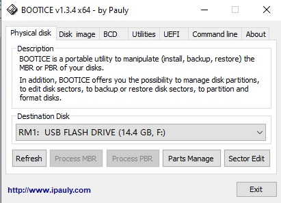
У випадаючому меню вибираємо USB FLASH DRIVE або назву
вашої флешки. Не потрібно вибирати HDD ваш жорсткий диск, так
як можна його змінити і тоді не буде завантажуватися
операційна система. Флешка після запису нашої програми також не
буде відкриватися в провіднику. Для того щоб знову її відкрити
потрібно флешку буде відформатувати.
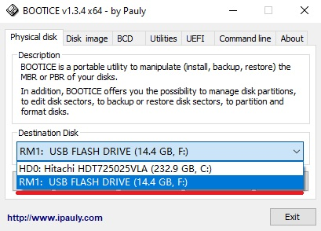
Вибираємо кнопку Sector Edit.
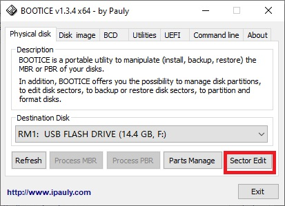
Отримаємо вікно з виглядом першого сектора або нульового.
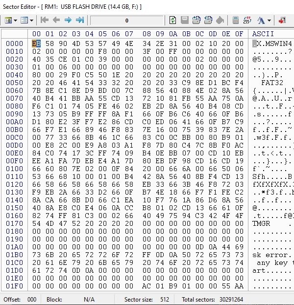
Нам потрібно завантажити прогрму hello1. Для цього вибираємо
Restore From File.
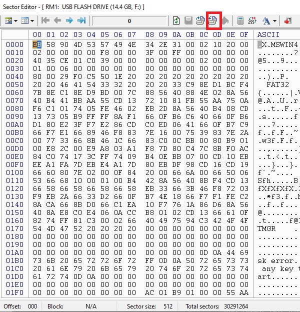
Вказуємо шлях до нашої скомпільованої програми з назвою hello1
без розширення крок 1 та 2. Знімаємо галочку з Keep signature
and partition table untouched, крок 3, та натискаємо кнопку
Restore, крок 4.
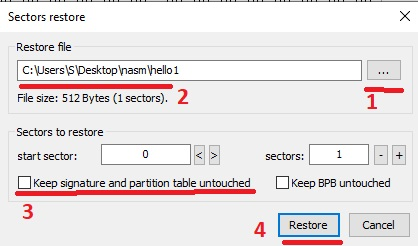
Після чого отримаємо завантажену програму з її завершенням 55 АА.
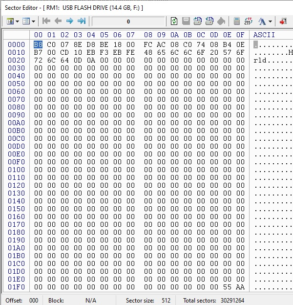
Додаткова інформація
Як відформатувати флешку
В Bootice вибираємо Parts Manage.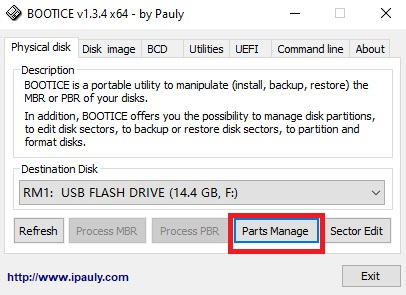
Далі Format this part.
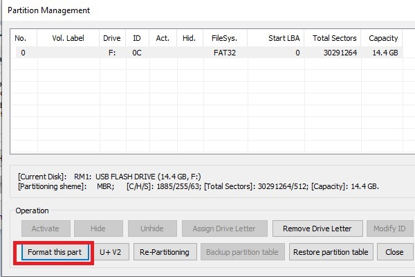
Потім Start.
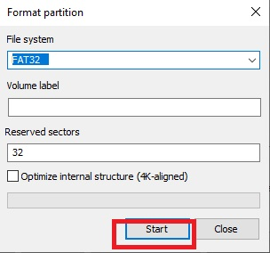
Флешка знову доступна для звичайного використання.
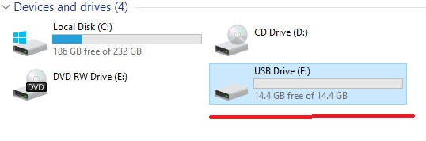